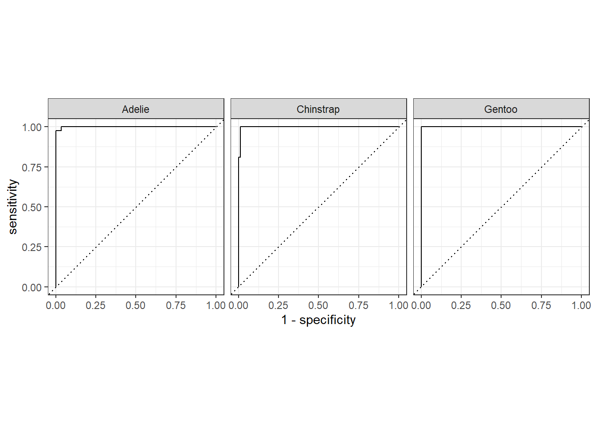

library(palmerpenguins)
library(rsample) # for initial_split
library(dplyr)
library(caret)
library(randomForest)
library(ada)
library(gbm)
library(tidyverse)
library(yardstick) #roc_curve5 Measures of Performance
Task: Build a tree-based model to predict species
5.1 Load libraries
5.2 Clean data
penguins_clean <- na.omit(penguins)
penguins_clean$species <- as.factor(penguins_clean$species)5.3 Stratified train-test split
set.seed(123)
split <- initial_split(penguins_clean, prop = 0.7, strata = "species")
train_data <- training(split)
table(train_data$species)
Adelie Chinstrap Gentoo
102 47 83 test_data <- testing(split)
table(test_data$species)
Adelie Chinstrap Gentoo
44 21 36 5.4 Variables
predictors <- c("bill_length_mm", "bill_depth_mm", "flipper_length_mm", "body_mass_g", "sex")
response <- "species"5.5 Random Forest Model
set.seed(123)
rf_model <- randomForest(
as.formula(paste(response, "~", paste(predictors, collapse = "+"))),
data = train_data,
importance = TRUE
)
rf_model
Call:
randomForest(formula = as.formula(paste(response, "~", paste(predictors, collapse = "+"))), data = train_data, importance = TRUE)
Type of random forest: classification
Number of trees: 500
No. of variables tried at each split: 2
OOB estimate of error rate: 3.45%
Confusion matrix:
Adelie Chinstrap Gentoo class.error
Adelie 100 1 1 0.01960784
Chinstrap 4 42 1 0.10638298
Gentoo 0 1 82 0.01204819rf_pred <- predict(rf_model, newdata = test_data)
rf_pred 1 2 3 4 5 6 7 8
Adelie Adelie Adelie Adelie Adelie Adelie Adelie Adelie
9 10 11 12 13 14 15 16
Adelie Adelie Adelie Adelie Adelie Adelie Adelie Adelie
17 18 19 20 21 22 23 24
Adelie Adelie Adelie Adelie Adelie Adelie Adelie Adelie
25 26 27 28 29 30 31 32
Adelie Chinstrap Adelie Adelie Adelie Adelie Adelie Adelie
33 34 35 36 37 38 39 40
Adelie Adelie Adelie Adelie Adelie Adelie Adelie Adelie
41 42 43 44 45 46 47 48
Adelie Adelie Adelie Adelie Gentoo Gentoo Gentoo Gentoo
49 50 51 52 53 54 55 56
Gentoo Gentoo Gentoo Gentoo Gentoo Gentoo Gentoo Gentoo
57 58 59 60 61 62 63 64
Gentoo Gentoo Gentoo Gentoo Gentoo Gentoo Gentoo Gentoo
65 66 67 68 69 70 71 72
Gentoo Gentoo Gentoo Gentoo Gentoo Gentoo Gentoo Gentoo
73 74 75 76 77 78 79 80
Gentoo Gentoo Gentoo Gentoo Gentoo Gentoo Gentoo Gentoo
81 82 83 84 85 86 87 88
Chinstrap Chinstrap Chinstrap Chinstrap Chinstrap Chinstrap Chinstrap Chinstrap
89 90 91 92 93 94 95 96
Chinstrap Chinstrap Chinstrap Chinstrap Chinstrap Chinstrap Chinstrap Chinstrap
97 98 99 100 101
Chinstrap Chinstrap Chinstrap Chinstrap Chinstrap
Levels: Adelie Chinstrap Gentoorf_cm <- confusionMatrix(rf_pred, test_data$species)
print(rf_cm)Confusion Matrix and Statistics
Reference
Prediction Adelie Chinstrap Gentoo
Adelie 43 0 0
Chinstrap 1 21 0
Gentoo 0 0 36
Overall Statistics
Accuracy : 0.9901
95% CI : (0.9461, 0.9997)
No Information Rate : 0.4356
P-Value [Acc > NIR] : < 2.2e-16
Kappa : 0.9846
Mcnemar's Test P-Value : NA
Statistics by Class:
Class: Adelie Class: Chinstrap Class: Gentoo
Sensitivity 0.9773 1.0000 1.0000
Specificity 1.0000 0.9875 1.0000
Pos Pred Value 1.0000 0.9545 1.0000
Neg Pred Value 0.9828 1.0000 1.0000
Prevalence 0.4356 0.2079 0.3564
Detection Rate 0.4257 0.2079 0.3564
Detection Prevalence 0.4257 0.2178 0.3564
Balanced Accuracy 0.9886 0.9938 1.00005.6 Exercise
Compute the following measures manually and interpret them.
Sensitivity
Specificity
Prevalence
Positive Prediction Value (PPV)
Negative Prediction Value (NPV)
Detection rate
Detection prevalence
Balanced accuracy
Precision
Recall
F1 score
5.7 Receiver Operating Characteristic (ROC) curves
ROC curves are normally for binary classification, but penguins$species has three classes. For multiclass ROC, we compute one-vs-all ROC curves.
It’s a plot of:
True Positive Rate (TPR / Sensitivity) on the y-axis
False Positive Rate (FPR = 1 - Specificity) on the x-axis
It shows the trade-off between sensitivity and specificity for different decision thresholds of a classifier.
5.7.1 Metric Formula
True Positive Rate (Sensitivity)
\[TPR = TP / (TP + FN)\]
False Positive Rate
\[FPR = FP / (FP + TN)\]
Specificity
\[TN / (TN + FP) = 1 − FPR\]
Where:
\(TP\) = True Positives
\(FP\) = False Positives
\(TN\) = True Negatives
\(FN\) = False Negatives
# Predict class probabilities
rf_prob <- predict(rf_model, newdata = test_data, type = "prob")
rf_prob Adelie Chinstrap Gentoo
1 0.978 0.022 0.000
2 0.924 0.076 0.000
3 0.990 0.010 0.000
4 0.976 0.024 0.000
5 0.972 0.028 0.000
6 0.994 0.006 0.000
7 0.994 0.006 0.000
8 0.964 0.036 0.000
9 0.994 0.006 0.000
10 0.984 0.016 0.000
11 0.718 0.280 0.002
12 0.998 0.002 0.000
13 0.998 0.002 0.000
14 0.994 0.006 0.000
15 0.952 0.048 0.000
16 0.966 0.034 0.000
17 1.000 0.000 0.000
18 0.996 0.004 0.000
19 0.966 0.034 0.000
20 0.992 0.008 0.000
21 0.894 0.068 0.038
22 0.984 0.016 0.000
23 0.990 0.010 0.000
24 1.000 0.000 0.000
25 0.974 0.026 0.000
26 0.262 0.734 0.004
27 0.802 0.196 0.002
28 0.864 0.088 0.048
29 0.978 0.022 0.000
30 0.934 0.060 0.006
31 0.980 0.020 0.000
32 0.750 0.250 0.000
33 0.986 0.014 0.000
34 0.998 0.002 0.000
35 0.982 0.018 0.000
36 0.968 0.032 0.000
37 0.988 0.012 0.000
38 0.998 0.002 0.000
39 1.000 0.000 0.000
40 0.980 0.020 0.000
41 0.986 0.014 0.000
42 0.990 0.010 0.000
43 0.958 0.042 0.000
44 0.898 0.060 0.042
45 0.000 0.000 1.000
46 0.000 0.004 0.996
47 0.000 0.000 1.000
48 0.000 0.000 1.000
49 0.002 0.006 0.992
50 0.006 0.014 0.980
51 0.000 0.000 1.000
52 0.000 0.012 0.988
53 0.000 0.000 1.000
54 0.000 0.004 0.996
55 0.016 0.008 0.976
56 0.000 0.000 1.000
57 0.000 0.000 1.000
58 0.014 0.004 0.982
59 0.016 0.026 0.958
60 0.000 0.000 1.000
61 0.002 0.008 0.990
62 0.004 0.026 0.970
63 0.002 0.000 0.998
64 0.000 0.000 1.000
65 0.000 0.000 1.000
66 0.000 0.000 1.000
67 0.000 0.004 0.996
68 0.000 0.000 1.000
69 0.000 0.000 1.000
70 0.000 0.000 1.000
71 0.000 0.000 1.000
72 0.000 0.002 0.998
73 0.000 0.000 1.000
74 0.000 0.000 1.000
75 0.002 0.006 0.992
76 0.012 0.020 0.968
77 0.000 0.000 1.000
78 0.000 0.000 1.000
79 0.000 0.000 1.000
80 0.000 0.000 1.000
81 0.018 0.982 0.000
82 0.032 0.968 0.000
83 0.040 0.960 0.000
84 0.022 0.978 0.000
85 0.162 0.838 0.000
86 0.052 0.944 0.004
87 0.038 0.958 0.004
88 0.070 0.920 0.010
89 0.030 0.966 0.004
90 0.204 0.794 0.002
91 0.030 0.966 0.004
92 0.036 0.940 0.024
93 0.026 0.968 0.006
94 0.334 0.506 0.160
95 0.022 0.976 0.002
96 0.250 0.456 0.294
97 0.004 0.990 0.006
98 0.030 0.966 0.004
99 0.034 0.960 0.006
100 0.202 0.722 0.076
101 0.328 0.474 0.198
attr(,"class")
[1] "matrix" "array" "votes" # Combine predicted probabilities with true labels for tidymodels
rf_results <- test_data %>%
select(species) %>%
bind_cols(as.data.frame(rf_prob))
rf_results# A tibble: 101 × 4
species Adelie Chinstrap Gentoo
* <fct> <dbl> <dbl> <dbl>
1 Adelie 0.978 0.022 0
2 Adelie 0.924 0.076 0
3 Adelie 0.99 0.01 0
4 Adelie 0.976 0.024 0
5 Adelie 0.972 0.028 0
6 Adelie 0.994 0.006 0
7 Adelie 0.994 0.006 0
8 Adelie 0.964 0.036 0
9 Adelie 0.994 0.006 0
10 Adelie 0.984 0.016 0
# ℹ 91 more rows# Compute ROC curves
# roc_curve() for multiclass expects:
# truth column and all class probability columns
roc_data <- rf_results %>%
roc_curve(truth = species, Adelie, Chinstrap, Gentoo)
roc_data# A tibble: 129 × 4
.level .threshold specificity sensitivity
<chr> <dbl> <dbl> <dbl>
1 Adelie -Inf 0 1
2 Adelie 0 0 1
3 Adelie 0.002 0.456 1
4 Adelie 0.004 0.526 1
5 Adelie 0.006 0.561 1
6 Adelie 0.012 0.579 1
7 Adelie 0.014 0.596 1
8 Adelie 0.016 0.614 1
9 Adelie 0.018 0.649 1
10 Adelie 0.022 0.667 1
# ℹ 119 more rows# Plot ROC curves
roc_data |> autoplot() 
# Compute AUC for each class
auc_data <- rf_results |>
roc_auc(truth = species, Adelie, Chinstrap, Gentoo)
auc_data# A tibble: 1 × 3
.metric .estimator .estimate
<chr> <chr> <dbl>
1 roc_auc hand_till 0.9995.8 Illustration of How ROC Curves Are Plotted
Let’s do that for one species (Adelie) vs others, using predicted probabilities from a Random Forest.
test_data_adelie <- test_data |>
mutate(actual = ifelse(species == "Adelie", 1, 0))
test_data_adelie |> glimpse()Rows: 101
Columns: 9
$ species <fct> Adelie, Adelie, Adelie, Adelie, Adelie, Adelie, Adel…
$ island <fct> Torgersen, Torgersen, Torgersen, Torgersen, Biscoe, …
$ bill_length_mm <dbl> 39.1, 39.5, 39.3, 36.6, 37.7, 35.9, 38.2, 38.8, 37.9…
$ bill_depth_mm <dbl> 18.7, 17.4, 20.6, 17.8, 18.7, 19.2, 18.1, 17.2, 18.6…
$ flipper_length_mm <int> 181, 186, 190, 185, 180, 189, 185, 180, 172, 188, 18…
$ body_mass_g <int> 3750, 3800, 3650, 3700, 3600, 3800, 3950, 3800, 3150…
$ sex <fct> male, female, male, female, male, female, male, male…
$ year <int> 2007, 2007, 2007, 2007, 2007, 2007, 2007, 2007, 2007…
$ actual <dbl> 1, 1, 1, 1, 1, 1, 1, 1, 1, 1, 1, 1, 1, 1, 1, 1, 1, 1…We can calculate TPR and FPR at different thresholds:
thresholds <- seq(0, 1, by = 0.1) # thresholds from 0 to 1
roc_manual <- data.frame(threshold = thresholds, TPR = NA, FPR = NA)
for (i in seq_along(thresholds)) {
thresh <- thresholds[i]
# Predicted class based on threshold
pred_class <- ifelse(test_data$pred_adelie >= thresh, 1, 0)
# Confusion matrix components
TP <- sum(pred_class == 1 & test_data$actual == 1)
FP <- sum(pred_class == 1 & test_data$actual == 0)
FN <- sum(pred_class == 0 & test_data$actual == 1)
TN <- sum(pred_class == 0 & test_data$actual == 0)
# Compute TPR and FPR
roc_manual$TPR[i] <- TP / (TP + FN)
roc_manual$FPR[i] <- FP / (FP + TN)
}
roc_manual threshold TPR FPR
1 0.0 NaN NaN
2 0.1 NaN NaN
3 0.2 NaN NaN
4 0.3 NaN NaN
5 0.4 NaN NaN
6 0.5 NaN NaN
7 0.6 NaN NaN
8 0.7 NaN NaN
9 0.8 NaN NaN
10 0.9 NaN NaN
11 1.0 NaN NaNThe NaN (Not a Number) appears because some thresholds may produce divisions by zero, typically when (TP + FN) or (FP + TN) is zero. This can happen if the classifier predicts all 0s or all 1s for extreme thresholds (0 or 1).
thresholds <- seq(0, 1, by = 0.1) # thresholds from 0 to 1
roc_manual <- data.frame(threshold = thresholds, TPR = NA, FPR = NA)
for (i in seq_along(thresholds)) {
thresh <- thresholds[i]
# Predicted class based on threshold
pred_class <- ifelse(test_data$pred_adelie >= thresh, 1, 0)
# Confusion matrix components
TP <- sum(pred_class == 1 & test_data$actual == 1)
FP <- sum(pred_class == 1 & test_data$actual == 0)
FN <- sum(pred_class == 0 & test_data$actual == 1)
TN <- sum(pred_class == 0 & test_data$actual == 0)
# Compute TPR safely
roc_manual$TPR[i] <- if ((TP + FN) == 0) 0 else TP / (TP + FN)
roc_manual$FPR[i] <- if ((FP + TN) == 0) 0 else FP / (FP + TN)
}
print(roc_manual) threshold TPR FPR
1 0.0 0 0
2 0.1 0 0
3 0.2 0 0
4 0.3 0 0
5 0.4 0 0
6 0.5 0 0
7 0.6 0 0
8 0.7 0 0
9 0.8 0 0
10 0.9 0 0
11 1.0 0 0